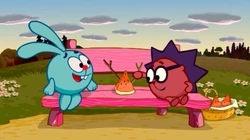
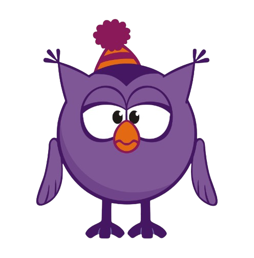
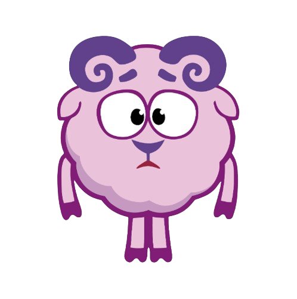
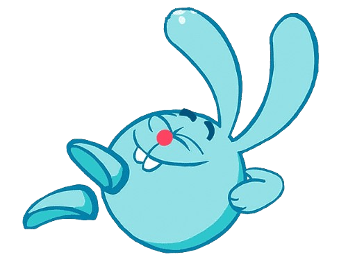

Цікаві Смішарики
У деяких серіях можна побачити, що на комп'ютері Лосяша встановлена операційна система « Okna 96 » — це відсилання до поширеної в усьому світі операційній системі Windows. А англійської « Windows » перекладається, як « Вікна ».
 Сцена в душі в серії « Бутерброд » є відсиланням до фільму Альфреда Хічкока « Психо ».
 Студія комп'ютерної анімації "Петербург" – Російська анімаційна студія, розташована в Санкт-Петербурзі. Найбільш відома виробництвом мультиплікаційного серіалу «Смішарики», за який автори були удостоєні Державної премії Російської Федерації у галузі культури та мистецтва за 2008 рік.
 Кролик Крош перетворився на Krash. Це ім'я співзвучне російському Крошу, але також є і своєрідним уподібненням до слова «crash», що перекладається як «аварія» або «гучний звук». Зважаючи на те, що в руках Кроша все зазвичай ламається, а сам він створює багато галасу, такий вибір імені цілком виправданий.